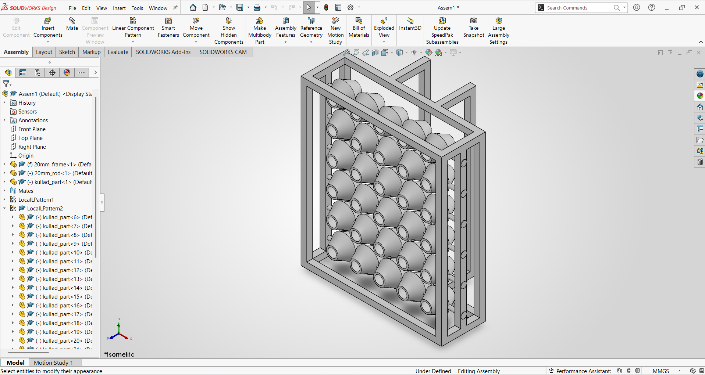
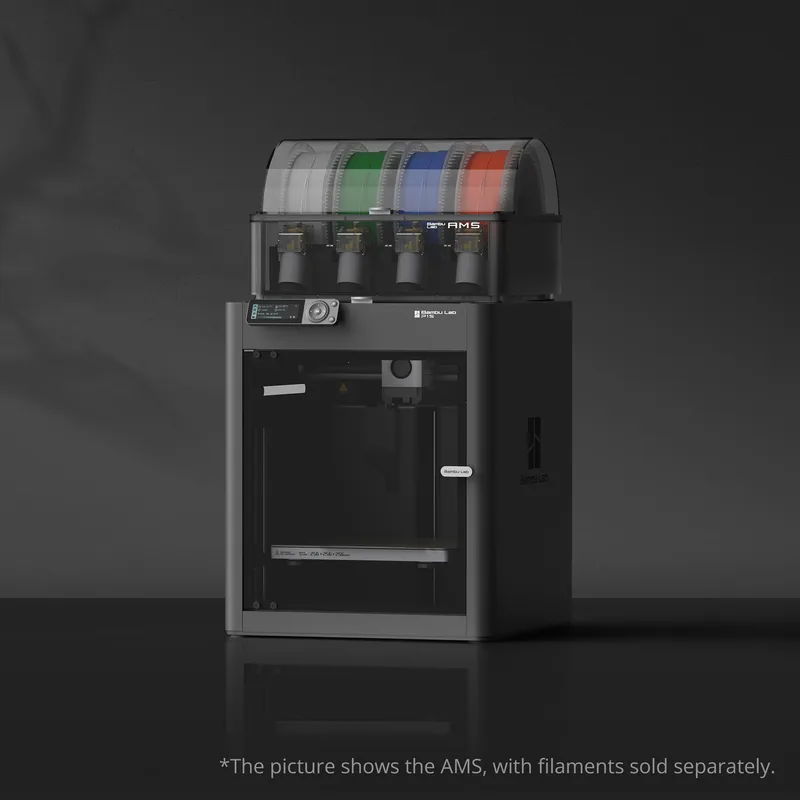
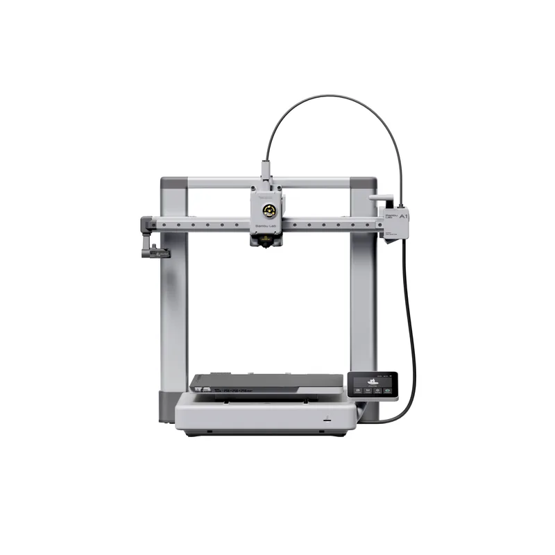
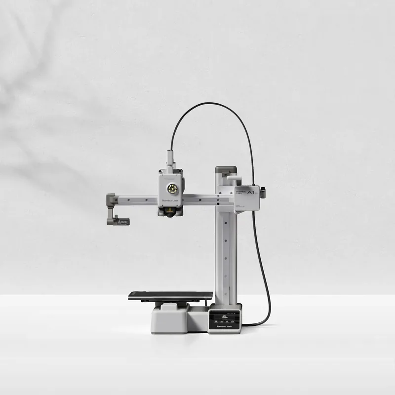
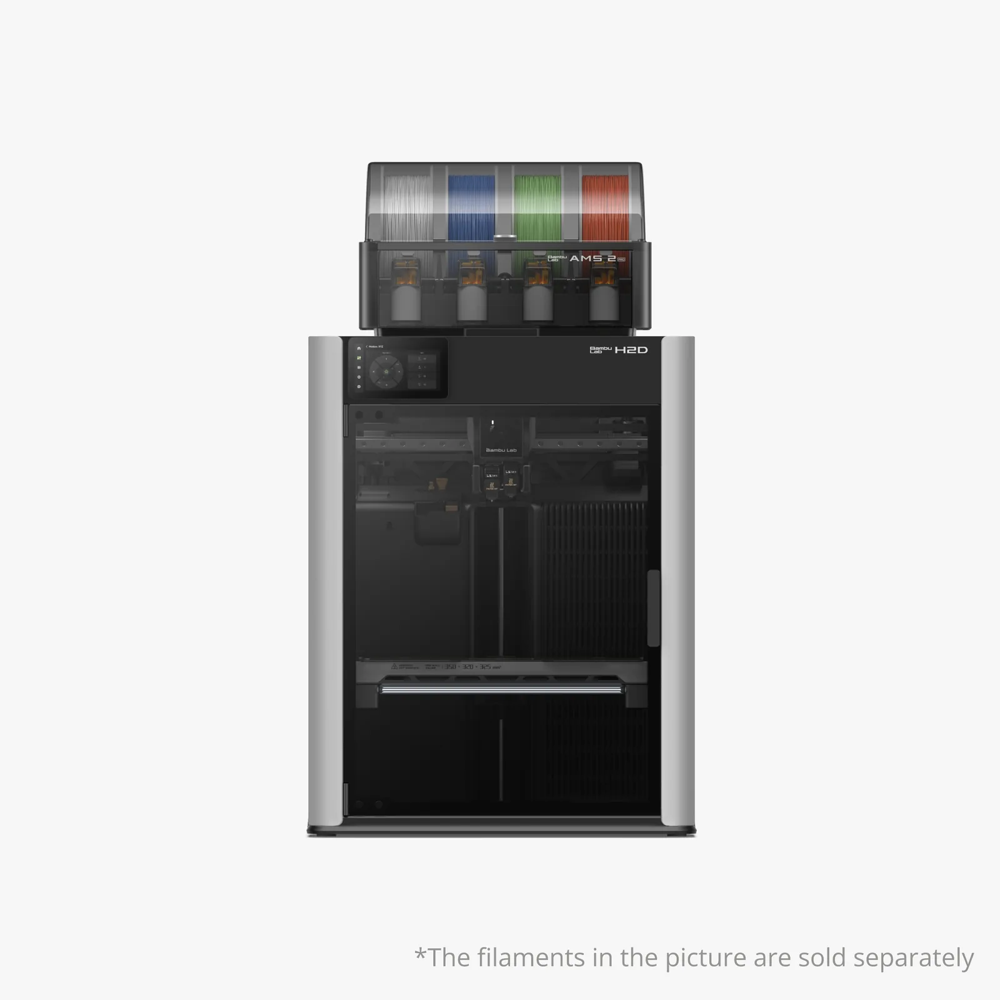

Temperature drop
Inlet air temperature behind the fans and outlet air temperature in front of the pots, at documented positions. ΔT = inlet − outlet.

Group 17 · Sanjivani University · Makerspace
Summer heat in Indian homes, classrooms and workshops, with little affordable cooling. ClayBreeze replaces the replaceable cooler pad with porous terracotta pots, kept wet by recirculating water and ventilated by two ESP32-controlled fans. The prototype is fully built and its control logic is running; performance testing is next, so no cooling results are claimed yet.
Student Tanmay Nilesh Pendbhaje · FY B.Tech Mechanical Engineering · Sanjivani University
Project Guide: Dr. Kiran Wakchaure
3D visualisation SolidWorks export and documented dimensions; fans approximate. Not a photograph.
SEC 02
Summer heat in Indian homes, classrooms and workshops is a real problem, and affordable cooling is limited — the Government of India's India Cooling Action Plan notes that India has one of the lowest levels of access to cooling in the world.
During a summer internship at Tinkerers' Lab, Sanjivani University, we looked at what a household, school or workshop can actually use. Air conditioners are expensive to buy and run and use refrigerants with climate impact. Pad coolers do cool, but their pads clog, degrade and must be replaced; grass pads can also grow mould, smell and become a fire risk when dry. Our answer: replace the pad with porous, unglazed terracotta pots — natural, locally made and reusable — kept wet by recirculating water, with ESP32 control of the fans and pump. Low cost, low power and no pad replacement are the design aims; testing will show how well it works.
| Approach | Potential advantages | Limitations and considerations |
|---|---|---|
| Air conditioners | Controlled cooling across a wide humidity range; can dehumidify. | High purchase and running cost and high electrical demand; refrigerants with climate impact. Out of reach for many households and schools. |
| Honeycomb / cellulose pad coolers | Cheaper; large wetted area; established designs that do cool, best in dry air. | Pads clog with scale and dust, degrade and need periodic replacement; plastic bodies. |
| Grass pad coolers (khus / wood-wool) | Local, low-cost media; simple construction. | Damp pads can harbour mould and bacteria, cause odour and attract insects; combustible when dry; frequent replacement. |
| ClayBreeze (this prototype) | Terracotta pots: natural, locally made, reusable, biodegradable — no pad to replace. The ESP32 runs fans and pump only when needed. | Design aims, not results: cooling, water use, power and service life are still to be measured. |
The question we are answering
Can a low-cost, low-power cooler that uses porous terracotta pots instead of a replaceable pad — with recirculating water and automatic fan and pump control — produce a measurable reduction in air temperature under defined conditions, with practical water use and safe operation?
SEC 03
When water evaporates from a wet surface it absorbs heat. If the clay pots stay wet and air is blown across them, the air leaving the assembly can be cooler — and it is always more humid. The two fans are mounted at the rear on the extension frame: they take in room air from behind and blow it forward through and around the pots, out of the front into the room. Because the pots do not seal against each other or the frame, some air bypasses them; that has not been measured.
Airflow direction confirmed by the team: the two fans on the rear extension blow room air forward through and around the pots and out of the front. The pump, tubing and reservoir are installed and the pump is switched on humidity by the ESP32; their positions here are illustrative.
Direct evaporative cooling has more potential in hot, dry air. As incoming humidity rises, the possible cooling falls, and the air leaving is always more humid than the air entering. We will measure temperature and humidity together.
SEC 04
How the prototype was built, in order, with the real workshop photographs. Click any photo to enlarge it. No dates are shown because none have been recorded.
SEC 05
The SolidWorks drawing is the source of the design dimensions. These are design values; the fabricated frame has had a visual inspection, but its as-built measurements are still pending.
The rod part file is named 20mm_rod in SolidWorks, but the drawing calls the rod out at ⌀12 mm — and ⌀12 mm matches the physical rods. The “20 mm” refers to the square pipe of the frame. It is a file-naming issue, not a dimension conflict.
SEC 06
Drag to orbit, scroll or pinch to zoom, and click or tap a part to see what it is and its status. Switch to SolidWorks model to see the team’s CAD export. Arrow keys orbit when the viewer has focus.
Tub, pump and tubing: approximate, estimated from photographs — not in the SolidWorks export
Conceptual airflow — not measured. Rear fans blow room air forward through and around the pots.
SolidWorks export: frame, rods and pots. Fans are not in the export and are shown from the approximate model. Explode, layers and part details use the interactive model.
3D view unavailable in this browser — showing the real SolidWorks assembly screenshot instead.
SEC 07
The ESP32, DHT11 and 3-channel relay module are integrated, and the control logic below is running on the ESP32. Firmware source will be added to this repository. Full detail: electronics-and-control.md.
Fans · temperature
Pump · humidity
SEC 08
No results yet. Measured temperature-drop and humidity results will be published here after testing. Below is the test plan for the completed prototype.
Inlet air temperature behind the fans and outlet air temperature in front of the pots, at documented positions. ΔT = inlet − outlet.
Inlet and outlet RH measured at the same time as temperature, because RH depends on temperature.
Anemometer readings at documented points, if an instrument is available. One point is not total flow.
Reservoir level or mass at the start and end of a timed run; leaks, splashes and refills noted separately.
Fan and pump nameplate ratings, plus measured power only where it can be done safely.
Method. Compare a fan-only run with dry pots against a wetted-pot run, keeping fan setting, sensor positions and duration the same, and recording ambient temperature and humidity for each run. Repeat runs where possible. Raw readings go into data/test-data-template.csv (currently a blank header). Full protocol: testing-and-results.md.
SEC 09
SEC 10
Build complete — control logic running
SEC 11
Every real workshop photograph and SolidWorks screenshot in the repository. No stock or generated images. Categories without any images yet are disabled.
Part II Fab Lab Notebook
The ClayBreeze project story ends above. This separate notebook records the 3D printing and laser cutting skills learned and practised at Tinkerers' Lab, Sanjivani University.
SEC 12
3D printing and laser cutting skills learned and practised at Tinkerers' Lab. The lab has four Bambu Lab printers that use FDM — Fused Deposition Modelling (also called FFF, Fused Filament Fabrication) and a CO2 (carbon dioxide) laser cutter. Tap or hover any dotted abbreviation for its meaning, or open the glossary.
Learning reference: Dr. Kiran Wakchaure's Fab Academy documentation (paraphrased in our own words). Full notes: digital-fabrication.md.
An FDM printer melts a plastic wire called filament and lays it down line by line, layer by layer, until the part is complete.
Dual-nozzle enclosed flagship — two materials in one print.

Enclosed all-rounder — a closed chamber for ABS and ASA.

Open-frame workhorse — full-size bed, multicolour with AMS lite.

Compact starter — small bed, quick to learn on.
Our own photographs of the same machines and of prints made at Tinkerers' Lab. Click any photo to enlarge.
| Specification | H2D | P1S | A1 | A1 mini |
|---|---|---|---|---|
| Build volume (W×D×H) | 325×320×325 mm (one nozzle); 300×320×320 mm (both) | 256×256×256 mm | 256×256×256 mm | 180×180×180 mm |
| Enclosure | Enclosed; chamber heating to 65 °C | Enclosed | Open frame (see manufacturer) | Open frame (see manufacturer) |
| Nozzle(s) | Two · 0.4 mm included | One · 0.4 mm included | One · 0.4 mm included | One · 0.4 mm included |
| Max nozzle temp. | 350 °C | 300 °C | 300 °C | 300 °C |
| Max bed temp. | 120 °C | 100 °C | 100 °C | 80 °C |
| AMS support | AMS 2 Pro, AMS HT | AMS (up to 16 colours) | AMS lite | AMS lite |
Sources: bambulab.com H2D, A1 and A1 mini tech-spec pages and the P1S store page (URLs in references.md). "See manufacturer": not stated on those pages.

Temperatures and ratings: Bambu Lab Wiki — Filament guide (nozzle ranges ±10 °C; always follow the spool label). Uses and notes are our own summary.
| Setting | What it does |
|---|---|
| Layer height | Thickness of each layer; thinner is smoother but slower. |
| First-layer height | Usually equal or a little thicker, so the first layer sticks and hides small bed bumps. |
| Nozzle diameter | Line width: 0.4 mm standard, 0.2 mm for fine detail, 0.6–0.8 mm for speed and strength. |
| Nozzle temperature | Set for the material: too cold gives weak layers, too hot gives strings. |
| Extruder | Gears that push filament into the hotend; "direct drive" means they sit right on the print head. The H2D has two nozzles. |
| Bed and build plate | A heated plate keeps the first layer down; the plate surface is chosen for the material. |
| Infill | The inside fill of a part, as a percentage and a pattern (grid, gyroid…); more infill is stronger but slower. |
| Perimeters (walls) | The outline loops around each layer; most of a part's strength comes from them. |
| Top / bottom layers | Solid skins that close the part. |
| Support | Temporary scaffolding printed under overhangs, removed afterwards. |
| Brim | Extra flat loops around the first layer that help small or tall parts stay stuck. |
| Raft | A throw-away base printed under the whole part; rarely needed on modern plates. |
| Speed and cooling fan | Faster saves time but can cost quality; the fan hardens each line — high for PLA, low for ABS/ASA. |
Laser-cutting work in progress — photographs and details will be added.
A CO2 (carbon dioxide) laser focuses an invisible infrared beam onto a sheet. It either burns a narrow line right through (cutting) or marks the surface (engraving). Lab machine: SIL CO2 laser cutter, 100 W.
Dashed: the drawn path · filled: the part after cutting Orange: gap
Kerf is the width of material the beam burns away. Half of it comes off each side of the drawn line, so tabs shrink and slots grow. Compensation moves each path out (or in) by half the kerf so the parts come out at the drawn size. Measure the real kerf on a test cut; this demo is conceptual, with no real values.
| Setting | What it does |
|---|---|
| Power % | Share of the tube's full output; more cuts deeper but chars edges and widens the kerf. |
| Speed | How fast the head moves; slower puts more energy into each millimetre. |
| Frequency / PPI | How often the laser pulses (PPI: pulses per inch); lower tends to char wood less, higher gives smoother acrylic edges. |
| Focus / focal length | The distance at which the beam is narrowest; the sheet surface must sit there. |
| Kerf compensation | Offsetting paths by half the kerf so press-fit parts come out at size. |
| Vector vs raster | Vector follows a line (cut or score); raster sweeps back and forth to engrave an area or picture. |
| Air assist | An air jet at the nozzle that blows away smoke and flame and keeps the lens clean. |
| Passes | Repeating a path; two gentler passes can char less than one slow pass. |
| Machine | SIL CO2 laser cutter |
|---|---|
| Laser power | 100 W |
| Bed size | [to confirm from machine label] |
| Other specifications | [to confirm from machine label] |
Tick each item before starting a job. Ticks are not saved.
SEC 13